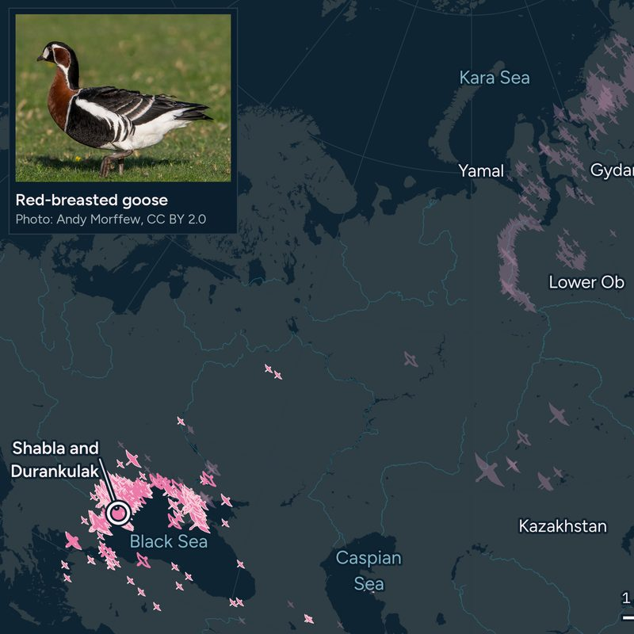
▶ AnimationFrom the tundra to the Black Sea
GBIF · Natural Earth
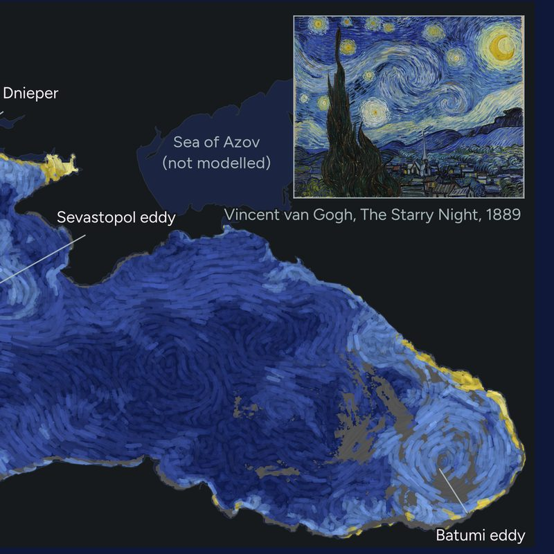
3 slidesStarry Night over the Black Sea
Sentinel-3 OLCI · Copernicus Marine
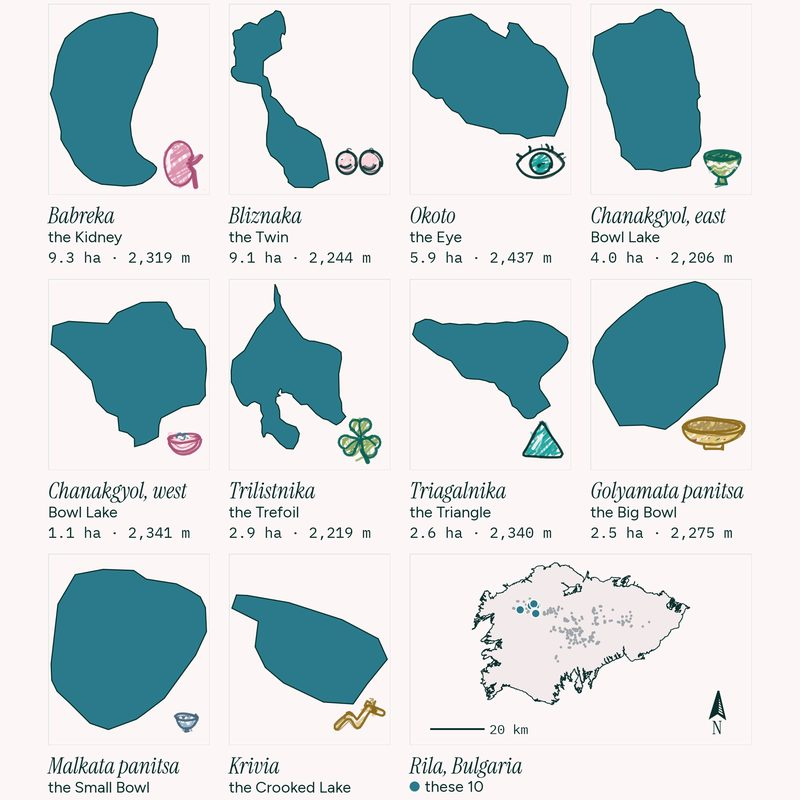
Ten Rila lakes and the shapes behind their names
OpenStreetMap · Copernicus DEM
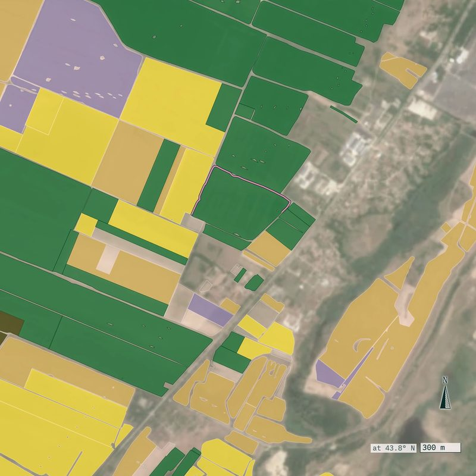
▶ AnimationWhere Bulgaria’s crops gather
DFZ declarations · Sentinel-2
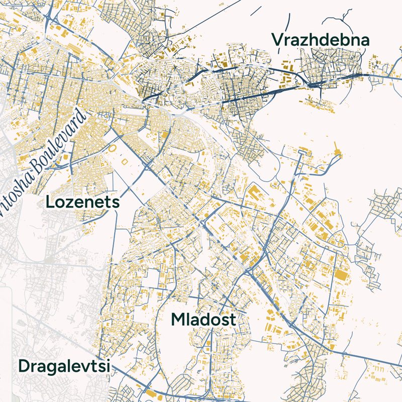
2 slidesHow much of Vitosha’s summit Sofia sees
Copernicus DEM · OpenStreetMap · GHSL
Lisbon’s Baixa, before and after 1755
Biblioteca Nacional de Portugal · Biblioteca Nacional de España
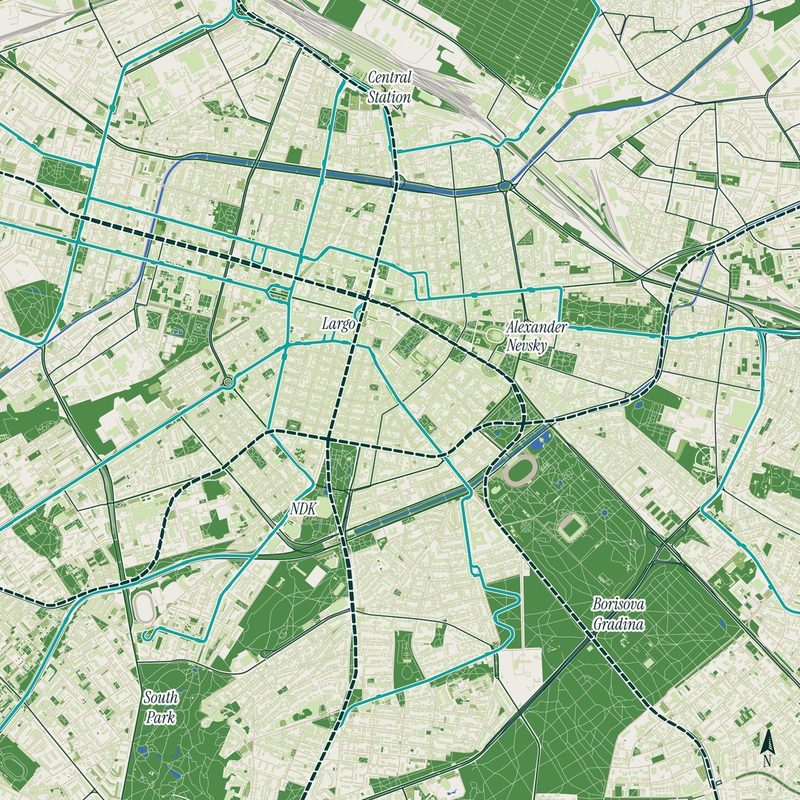
▶ AnimationCentral Sofia as it could be
OpenStreetMap
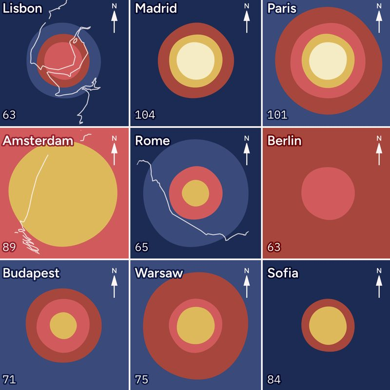
2 slidesTwelve capitals, twelve halos
Sentinel-5P · Natural Earth
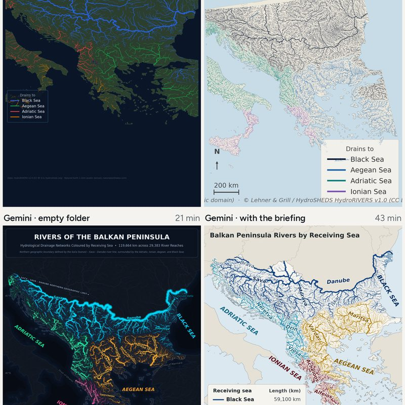
One map, asked four times
HydroRIVERS · Natural Earth · EEA
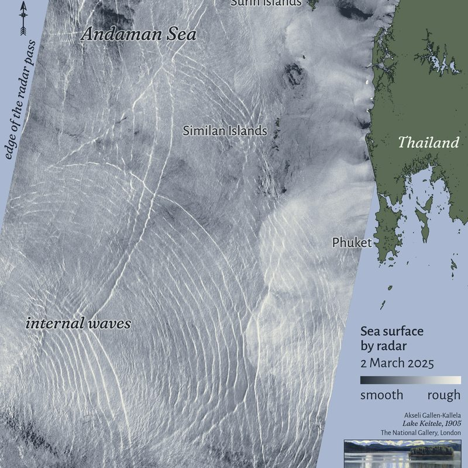
Internal waves in the Andaman Sea
Sentinel-1 · ESA WorldCover
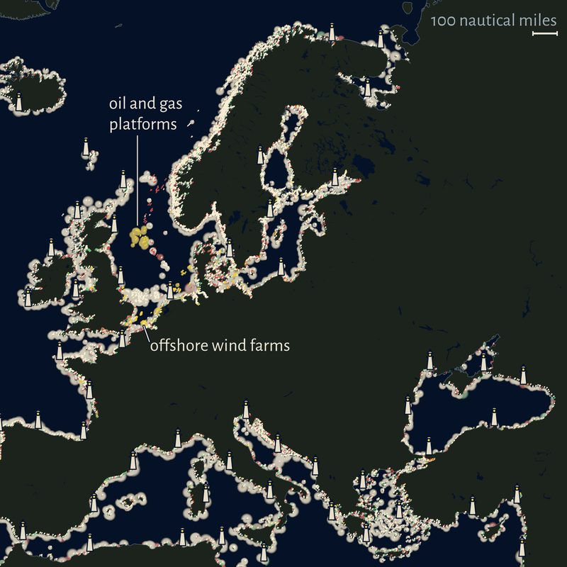
Everything the light touches
OpenStreetMap · NGA List of Lights
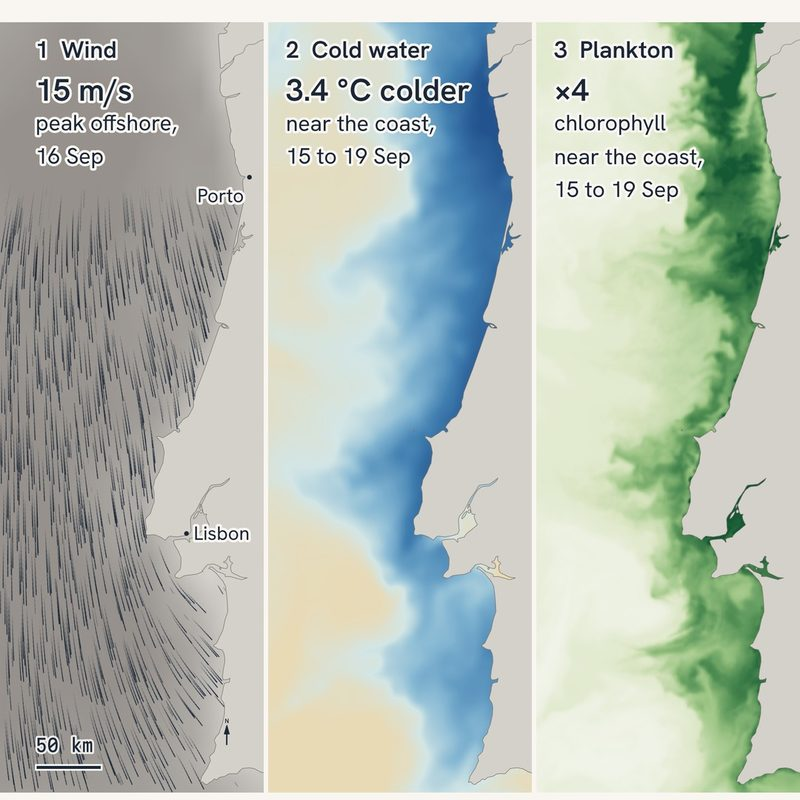
▶ AnimationThe nortada: wind, cold water, plankton
Copernicus Marine · Sentinel-3
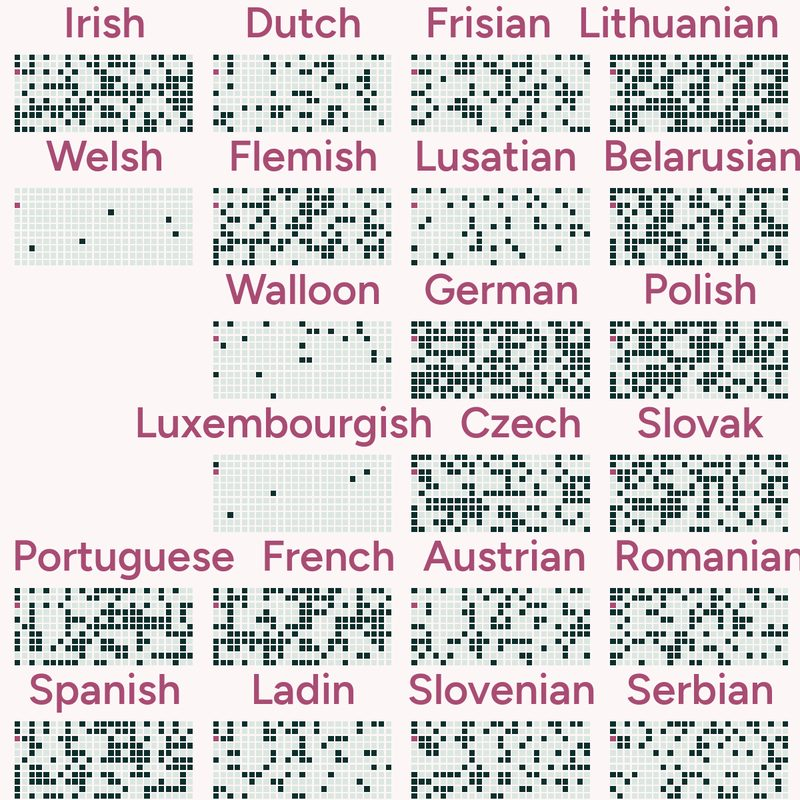
3 slidesThe oldest tales of Europe
da Silva & Tehrani 2016 · ATU index
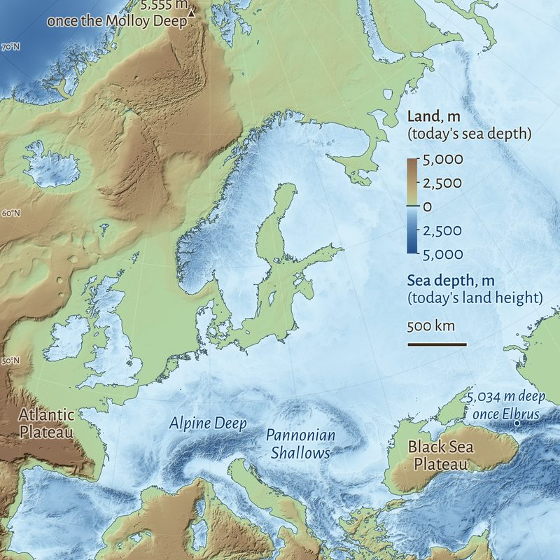
Europe, inside out
NOAA ETOPO 2022
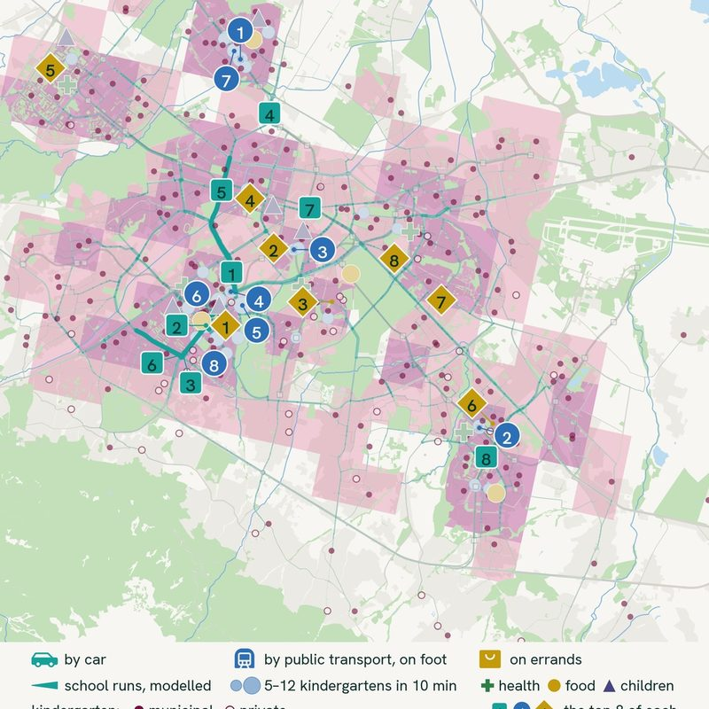
▶ AnimationWhere an ad meets a parent
OpenStreetMap · Eurostat census grid
The shadows of Tesso Nilo’s forest
Global Forest Change · GLAD forest height
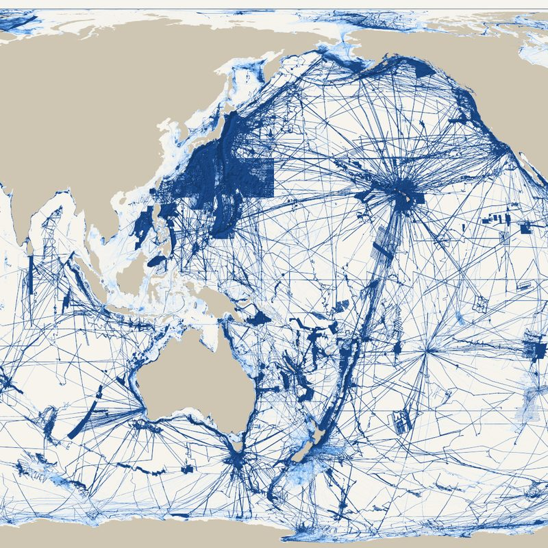
Over two thirds of the sea floor is null
GEBCO 2026 grid
The scent of Bulgaria
DFZ declarations · Copernicus DEMHave land you need to understand?
Freelance work is contracted through Timebooster (EU VAT registered).